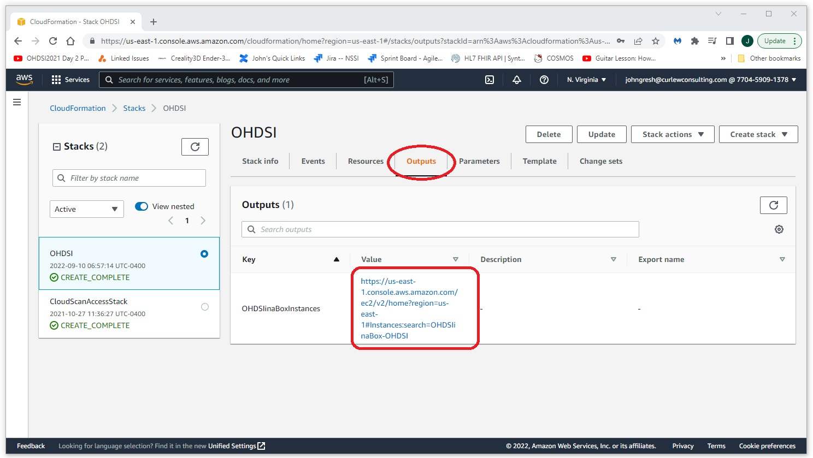

OHDSI-in-a-box
Introduction
OHDSI-in-a-box is a turnkey solution provided by Amazon AWS. OHDSI-in a box is intended as a development solution and is not intended for production use. This guide will walk through the process of setting up a complete OHDSI stack using OHDSI-in-a-box. This guide is based on the excellent video provided by James Wiggins at https://www.youtube.com/watch?v=9JbgyE4rW2w.
Create an Instance of OHDSI-in-a-box
Navigate to AWS and login to your instance.Navigate to the Github repository for the OHDSI-in-a-box project. Select the launch option for the region and operation system you want for your instance. For this example we will be creating a Windows instance (Linux is also available) in the US East (N. Virginia) region.
Accept the defaults on the first page.
On the second screen enter a password, select a network and sub-net (it doesn't really matter which one) and modify other parameters if desired. For this example we've accepted all of the defaults except for the disc space and machine type. We've opted for a 2TB disc and a t2.large machine.

On the third screen accept all defaults.
On the final confirmation screen accept all defaults and check the acknowledge box.
Go get a cup of coffee. It will take a few minutes (5 - 10 maybe) to create the instance.
Click on the outputs tab of the screen you are currently on (you are currently on the events tab). Click on the link in the Value column to navigate to the EC2 console (it will be filtered to show only your newly created OHDSI instance). 
When the instance is completed you should an instance state of Running and an indication that the Status Check has passed.
You can now RDP connect to your new OHDSI-in-a-box Server. Get the IP address from the EC2 console (the screen you saw when you clicked on the link above). The user name is ohdsi (unless you changed it in step 1). The password is the password you entered in step 1.